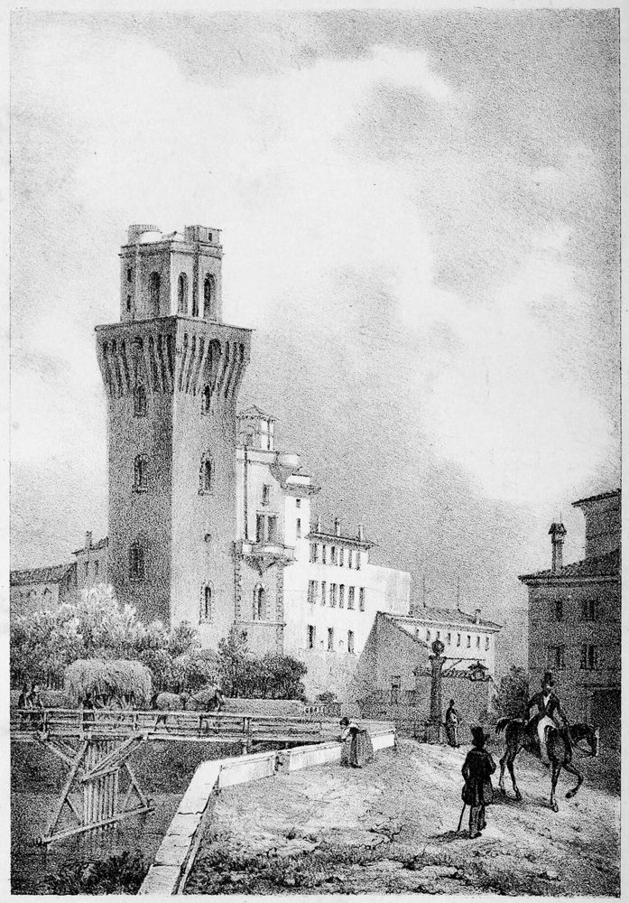

Padova, 1725–2025
A Padova la temperatura e la pioggia si misurano ogni giorno dal 1725, quando il fisico Giovanni Poleni iniziò a registrarle: è una delle serie climatiche giornaliere più lunghe al mondo. Qui sono ricostruite nella versione omogeneizzata, che collega le osservazioni di sette serie diverse, dagli strumenti del Settecento alle stazioni di oggi, e le rende confrontabili tra loro.

Tre secoli in una striscia
anomalia della temperatura media annua rispetto al 1961–1990Ogni riga verticale è un anno: blu più freddo, rosso più caldo della media 1961–1990. Passa sopra per leggere il valore. La riga più blu è il 1740, l'anno del grande freddo in tutta Europa.
Temperatura anno per anno
media mobile su 21 anniLa temperatura media c'è dal 1725; massime e minime dal 1774.
Mese per mese, stagione per stagione
scegli il periodoPer epoca
I più caldi e i più freddi
Giorni estremi
conteggio per anno dal 1774 · media mobile 11 anniPrecipitazioni
dal 1725 · totale annuo e media mobile 11 anniIl clima mese per mese
Medie mensili nei due trentenni di riferimento; la differenza mostra quanto è cambiato.
Sette serie, una sola storia
da quale osservatorio viene il dato di ogni annoNessuno strumento è rimasto al suo posto per tre secoli. La serie di Padova è stata ricostruita collegando le osservazioni di diversi osservatori e correggendole una per una, con formule mese per mese, perché risultino confrontabili con le misure di oggi. Dove un periodo mancava, i valori sono stati ricavati dalle serie di Milano, Mantova o Bologna. Passa sopra la barra per vedere la fonte di ogni anno.
- Giovanni Poleni, fisico e matematico dell'Università di Padova, registra la temperatura dal 1725 con un termometro in casa: le letture sono state convertite in valori all'aperto.
- Giovanni Battista Morgagni, il padre dell'anatomia patologica, annota il tempo di Padova fino al 1768.
- Giuseppe Toaldo avvia le osservazioni che dal 1774 proseguono alla Specola, l'osservatorio astronomico dell'Università, per quasi due secoli.
- Nel Novecento subentrano l'Ufficio Idrografico, la stazione dell'Aeronautica Militare e, dal 1980, la stazione che arriva fino ai giorni nostri.
Dove si sovrappongono gli strumenti
periodo di attività di ciascuna serie grezzaLa fascia qui sopra mostra la fonte scelta per ogni anno, ma gli strumenti si sono quasi sempre sovrapposti per un tratto: è proprio lì, confrontando le due serie negli stessi giorni, che si calcolano le funzioni di trasferimento mese per mese usate per correggerle (es. da Poleni a Specola a Idrografico, fino a oggi). Passa sopra una barra per il periodo esatto.
I record
temperatura dal 1774 · pioggia dal 1725🔥 I giorni più caldi
🧊 I giorni più freddi
🌧️ I giorni più piovosi
Un giorno nella storia
scegli una dataDati e metodo
- Fonte: serie giornaliera omogeneizzata della temperatura di Padova, aggiornata al 12 gennaio 1725 – 31 dicembre 2025 (C. Stefanini e coautori, 2023, rivista Climate, doi:10.3390/cli11120244), che si basa sul lavoro di D. Camuffo e C. Bertolin sulle serie storiche padovane e sulla conversione da Bologna (doi:10.1016/j.pce.2010.02.002) e sul lavoro di P. Cocheo e D. Camuffo sulla conversione da Milano e Mantova (doi:10.1023/A:1014958506923).
- Dal 1725 al 1773 si conosce solo la temperatura media del giorno; dal 1774 anche massima e minima, e la media è (massima + minima) / 2. Le serie più antiche sono state corrette con la ricostruzione climatica europea ModE-RA; quelle dell'Ottocento e del Novecento con funzioni di trasferimento mese per mese tra una serie e la successiva (coefficiente di correlazione r² tra 0,93 e 0,99 a seconda del mese e della coppia di strumenti).
- Un mese è considerato con almeno 25 giorni validi, un anno con almeno 330. Nessun giorno manca: i periodi senza misure a Padova sono stati ricostruiti dalle serie di Milano, Mantova e Bologna.
- Rispetto alla versione di questo file pubblicata in precedenza su questo sito (ferma al 31 dicembre 2023), gli autori hanno anche rivisto lievemente la calibrazione del periodo 2000–2004 (differenza media 0,3 °C, massima 0,5 °C il 28 maggio 2004): la serie qui sotto è quella più recente.
- Pioggia: serie giornaliera omogeneizzata separata, disponibile anch'essa dal 12 gennaio 1725, costruita dagli stessi autori a partire dalle osservazioni di Giovanni e Francesco Poleni e di Morgagni (D. Camuffo e coautori, 2020, rivista Climatic Change, doi:10.1007/s10584-020-02717-2; D. Camuffo e coautori, 2022, doi:10.1007/s12665-022-10467-w), dalla Specola (A. della Valle e coautori, 2023, doi:10.1007/s10584-023-03485-5) e dalle stazioni dell'Ufficio Idrografico, dell'Aeronautica Militare, dell'Università di Padova e di ARPAV nel Novecento, in parte riallineate all'intervallo 0–24h con la rianalisi ERA5 (L. Becherini e coautori, 2024, doi:10.3390/atmos15040412).
- Anomalie calcolate rispetto al trentennio 1961–1990. In tre secoli sono cambiati strumenti, posizioni e ambiente urbano: l'omogeneizzazione ne corregge gli effetti, ma i confronti con il Settecento vanno letti come indicativi.
⬇ Serie giornaliera (CSV) ⬇ Aggregati annuali e mensili (JSON)
Elaborazioni L. Varlani.